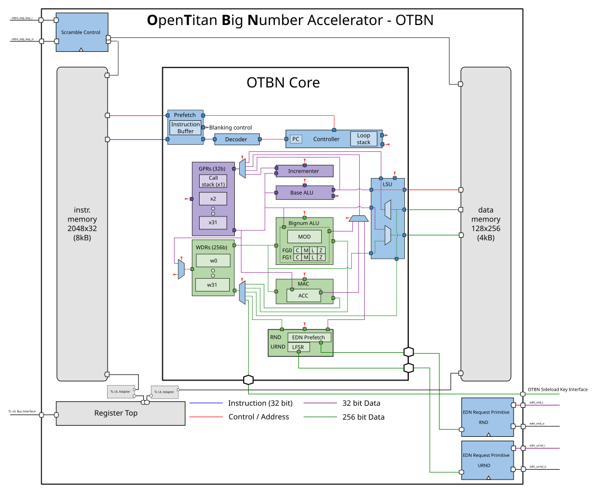

OTBN PKA Public Key Accelerator
The module is based on the OpenTitan OTBN design.
Features:
-
Fully programmable big integer processor
-
256-bit data path with 32 entry register file
-
32-bit control path with 32 entry register file
-
Complex flow control: conditional branching, loops, call/return with optimized hardware for performance
-
Dual status control bits to assist in big integer computation
-
Optimized modular arithmetic on big integers
-
-
Access to entropy noise stream from the TRNG
The OTBN is programmed in assembly and its runtime driver library currently supports the following algorithms:
-
ECDSA P256, P384
-
ECDH P256, P384
-
Ed25519
-
X25519
-
RSA 2k, 3k, 4k
-
Key generation, signature generation and signature verification
-
-
SHA256, SHA-512
Since the OTBN is programmable, more algorithms can easily be developed at a later time. The microcode is loaded into SRAM based instruction memory allowing firmware updates to be made in the field.

Figure 1 shows the upstream core. The OCAH bus, key-delivery, and entropy connections are described in the integration details below.
1. OCAH Modifications
-
AXI4-lite key bus slave interface replaces side loading interface
-
AXI4-lite control/status bus slave interface
The OTBN host path is the most complex OpenTitan path. The crypto interconnect
applies a CACHE_MODIFIABLE bit fix before the axi_dw_converter, because the
VeeR CPU may emit non-modifiable cache attributes for MMIO accesses that would
be rejected by the AXI-to-AXI-Lite converter. After data-width conversion and
AXI-Lite isolation, sep_crypto_otbn_wrapper bridges the request to TL-UL and
drives the standard otbn core configured with Stub = 0 and
RegFile = RegFileFF.
OTBN’s instruction and data memories are external SRAM macros; the IMEM and
DMEM prim_ram_1p_scr ports are brought out of the wrapper to the sep_crypto
top level. The two random-number request ports (edn_rnd, edn_urnd) are
served over native-protocol EDN by the shared
drbg_axis_edn_adapter instance u_axis_edn_crypto_s3c_scan in sep_crypto,
which converts the post-CSRNG DRBG AXI-Stream feed assigned to the crypto sink
domain into per-client EDN responses. The adapter forwards the per-beat FIPS
tag through a generic AXI-Stream tuser sideband. The CSRNG seed tag and
external entropy mux tag are tied high by the integration’s provisional
policy. A high tag prevents a FIPS-tag failure for that response but does not
prove that the entropy is FIPS compliant. The OTP scramble key
handshake is tied to fixed values. Life-cycle escalation and RMA request
signals are tied to their inactive state. OTBN occupies alert indices [2:1]
in OpenTitan Alert Termination and exports a single intr_done_o interrupt.
The Key Manager delivers a 384-bit OTBN key as twelve words per share, the
widest delivery in the subsystem, in the format given in Key Manager Key Delivery.
OTBN is the only accelerator that does not combine the shares in hardware. The
shares are exposed to the executing program through the KEY_S0_L /
KEY_S0_H and KEY_S1_L / KEY_S1_H special registers, each share split into
a 256-bit low and a 128-bit high half, and the program is responsible for
reconstructing the key as the XOR of the two shares. Each share is qualified
independently: reading a share whose key is not valid sets
ERR_BITS.KEY_INVALID and stops the program rather than returning key
material.
Consult the OpenTitan OTBN documentation for the authoritative core functionality of the IP. The Programmer’s Guide gives the programming guidance for this block. The register map follows below.
2. Memory Map and Register Reference
2.1. Memory Map
Register offsets are relative to the block base in the subsystem memory map. The detailed map below defines each register and its fields.
2.2. Detailed Register Map
OpenTitan Big Number Accelerator
Programmable coprocessor for asymmetric cryptography with SCA and FI countermeasures
Register List:
| Address | Name | Access | Description |
|---|---|---|---|
| 0x0 | INTR_STATE | RW | - |
| 0x4 | INTR_ENABLE | RW | - |
| 0x8 | INTR_TEST | W | - |
| 0xC | ALERT_TEST | W | - |
| 0x10 | CMD | W | - |
| 0x14 | CTRL | RW | - |
| 0x18 | STATUS | R | - |
| 0x1C | ERR_BITS | RW | - |
| 0x20 | FATAL_ALERT_CAUSE | R | - |
| 0x24 | INSN_CNT | RW | - |
| 0x28 | LOAD_CHECKSUM | RW | - |
Register Details:
INTR_STATE
| Bits | Field | Access | Reset | Description |
|---|---|---|---|---|
| 31:1 | Reserved | - | - | Reserved |
| 0 | done | RW1C | 0x0 | OTBN has completed the operation. |
INTR_ENABLE
| Bits | Field | Access | Reset | Description |
|---|---|---|---|---|
| 31:1 | Reserved | - | - | Reserved |
| 0 | done | RW | 0x0 | Enable interrupt when !!INTR_STATE.done is set. |
INTR_TEST
| Bits | Field | Access | Reset | Description |
|---|---|---|---|---|
| 31:1 | Reserved | - | - | Reserved |
| 0 | done | W | 0x0 | Write 1 to force !!INTR_STATE.done to 1. |
ALERT_TEST
| Bits | Field | Access | Reset | Description |
|---|---|---|---|---|
| 31:2 | Reserved | - | - | Reserved |
| 1 | recov | W | 0x0 | Write 1 to trigger one alert event of this kind. |
| 0 | fatal | W | 0x0 | Write 1 to trigger one alert event of this kind. |
CMD
| Bits | Field | Access | Reset | Description |
|---|---|---|---|---|
| 31:8 | Reserved | - | - | Reserved |
| 7:0 | cmd | W | 0x0 | The operation to perform. | Value | Name | Description | |:------|:--------------|:------------| | 0xd8 | EXECUTE | Starts the execution of the program stored in the instruction memory, starting at address zero. | | 0xc3 | SEC_WIPE_DMEM | Securely removes all contents from the data memory. | | 0x1e | SEC_WIPE_IMEM | Securely removes all contents from the instruction memory. | |
CTRL
| Bits | Field | Access | Reset | Description |
|---|---|---|---|---|
| 31:1 | Reserved | - | - | Reserved |
| 0 | software_errs_fatal | RW | 0x0 | Controls the reaction to software errors. When set software errors produce fatal errors, rather than recoverable errors. Writes are ignored if OTBN is not idle. |
STATUS
| Bits | Field | Access | Reset | Description |
|---|---|---|---|---|
| 31:8 | Reserved | - | - | Reserved |
| 7:0 | status | R | 0x4 | Indicates the current operational state OTBN is in. All BUSY values represent an operation started by a write to the !!CMD register. | Value | Name | Description | |:------|:-------------------|:------------------------------------------------------| | 0x00 | IDLE | OTBN is idle: it is not performing any action. | | 0x01 | BUSY_EXECUTE | OTBN is busy executing software. | | 0x02 | BUSY_SEC_WIPE_DMEM | OTBN is busy securely wiping the data memory. | | 0x03 | BUSY_SEC_WIPE_IMEM | OTBN is busy securely wiping the instruction memory. | | 0x04 | BUSY_SEC_WIPE_INT | OTBN is busy securely wiping the internal state. | | 0xFF | LOCKED | OTBN is locked as reaction to a fatal error, and must be reset to unlock it again. See also the section "Reaction to Fatal Errors". | |
ERR_BITS
| Bits | Field | Access | Reset | Description |
|---|---|---|---|---|
| 31:24 | Reserved | - | - | Reserved |
| 23 | fatal_software | RW | 0x0 | A `FATAL_SOFTWARE` error was observed. |
| 22 | lifecycle_escalation | RW | 0x0 | A `LIFECYCLE_ESCALATION` error was observed. |
| 21 | illegal_bus_access | RW | 0x0 | An `ILLEGAL_BUS_ACCESS` error was observed. |
| 20 | bad_internal_state | RW | 0x0 | A `BAD_INTERNAL_STATE` error was observed. |
| 19 | bus_intg_violation | RW | 0x0 | A `BUS_INTG_VIOLATION` error was observed. |
| 18 | reg_intg_violation | RW | 0x0 | A `REG_INTG_VIOLATION` error was observed. |
| 17 | dmem_intg_violation | RW | 0x0 | A `DMEM_INTG_VIOLATION` error was observed. |
| 16 | imem_intg_violation | RW | 0x0 | A `IMEM_INTG_VIOLATION` error was observed. |
| 15:9 | Reserved | - | - | Reserved |
| 8 | mai_software_error | RW | 0x0 | An `MAI_SOFTWARE_ERROR` error was observed. |
| 7 | rnd_fips_chk_fail | RW | 0x0 | An `RND_FIPS_CHK_FAIL` error was observed. |
| 6 | rnd_rep_chk_fail | RW | 0x0 | An `RND_REP_CHK_FAIL` error was observed. |
| 5 | key_invalid | RW | 0x0 | A `KEY_INVALID` error was observed. |
| 4 | loop | RW | 0x0 | A `LOOP` error was observed. |
| 3 | illegal_insn | RW | 0x0 | An `ILLEGAL_INSN` error was observed. |
| 2 | call_stack | RW | 0x0 | A `CALL_STACK` error was observed. |
| 1 | bad_insn_addr | RW | 0x0 | A `BAD_INSN_ADDR` error was observed. |
| 0 | bad_data_addr | RW | 0x0 | A `BAD_DATA_ADDR` error was observed. |
FATAL_ALERT_CAUSE
| Bits | Field | Access | Reset | Description |
|---|---|---|---|---|
| 31:8 | Reserved | - | - | Reserved |
| 7 | fatal_software | R | 0x0 | A `FATAL_SOFTWARE` error was observed. |
| 6 | lifecycle_escalation | R | 0x0 | A `LIFECYCLE_ESCALATION` error was observed. |
| 5 | illegal_bus_access | R | 0x0 | A `ILLEGAL_BUS_ACCESS` error was observed. |
| 4 | bad_internal_state | R | 0x0 | A `BAD_INTERNAL_STATE` error was observed. |
| 3 | bus_intg_violation | R | 0x0 | A `BUS_INTG_VIOLATION` error was observed. |
| 2 | reg_intg_violation | R | 0x0 | A `REG_INTG_VIOLATION` error was observed. |
| 1 | dmem_intg_violation | R | 0x0 | A `DMEM_INTG_VIOLATION` error was observed. |
| 0 | imem_intg_violation | R | 0x0 | A `IMEM_INTG_VIOLATION` error was observed. |
INSN_CNT
| Bits | Field | Access | Reset | Description |
|---|---|---|---|---|
| 31:0 | insn_cnt | RW | 0x0 | The number of executed instructions. |
LOAD_CHECKSUM
| Bits | Field | Access | Reset | Description |
|---|---|---|---|---|
| 31:0 | checksum | RW | 0x0 | Checksum accumulator |